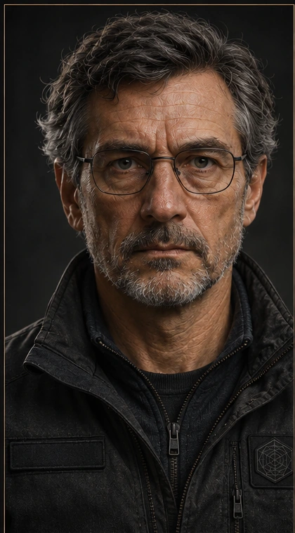

Геолог · інженер
Фахівець, який оцінює ризики до початку робіт
Остап Кравець — геолог та інженер, чиї знання стають важливими під час кризових ситуацій і масштабного підземного будівництва. Він аналізує стан споруд і гірських масивів, перш ніж ухвалювати рішення, від яких залежить безпека людей.
ІСТОРІЯ ПЕРСОНАЖА
Математика катастрофи
Під час кризи на дамбі Остап одним із перших долучається до оцінювання наслідків вибуху. У кризовому центрі він координує аналіз поведінки конструкції разом з інженерами, фахівцями з гідротехнічних споруд, військовими аналітиками та аварійними службами. Формально він не очолює всю групу, однак його висновки часто виявляються особливо точними.
Підземне місто під Донецьком
Згодом Остап очолює окремий напрямок робіт під Донецьком. Його команда обстежує старі шахти: перевіряє газ, воду, стан кріплень і шукає ділянки, придатні для майбутнього міста. Він не сприймає наявні виробки як готову інфраструктуру — кожну з них потрібно оцінити окремо.
Під час будівництва Кравець спирається на геологічні дані, сенсори та спільну модель масиву. Майбутню порожнину ділять на невеликі сектори, а породу прибирають поетапно за допомогою порталів. Такий підхід дає змогу контролювати перерозподіл навантажень, рух підземних вод і ризик обвалів.
Після Донецька Остап планує перейти до робіт у Луганську. Цей напрямок залишається окремим від загальної програми будівництва інших підземних міст.